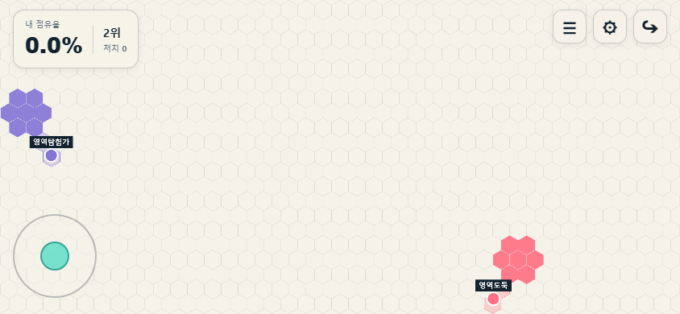

MARKER DESIGN STUDY · DRAFT 01
11개의 작은 플레이어
확대 모습과 실제 플레이 크기를 함께 보는 승인용 시안. 모두 같은 Coral 본체로 비교합니다. 선택한 11개는 본체·고정 디테일을 분리해 상점과 게임에 연결했습니다. 이 페이지는 기존 시안 비교를 보존합니다.
본체 최대 42 world units ≈ 16 CSS px슬롯 링 포함 ≈ 20 CSS px아래 작은 모습은 확대하지 않습니다
실제 보드 위에서
현재 게임의 844 × 390 캡처 위에 시안을 표시한 비교용 합성입니다. 게임 렌더러에 연결한 화면은 아닙니다. 캡처는 고정 배경이고 시안·슬롯 링만 변경됩니다. 화면을 축소해 맞추지 않으므로 작은 화면에서는 가로로 스크롤할 수 있습니다.

나Marker Color 방향 · 색상 초안
본체만 Coral → Violet. 눈·밝은 디테일·슬롯 링은 유지하는 방향입니다. 별도로 생성한 색상 시안이며 레이어 렌더러를 구현한 결과는 아닙니다.
Coral 본체
Violet 본체
시안을 읽고 있습니다…
중립 · 내 영토 · 상대 영토 · 15번 슬롯 배경에서 확인합니다. 마지막 칸은 Marker Color를 유지하고 링만 15번 슬롯 색상으로 바꿉니다. 두 고정색이 같은 픽셀로 합쳐지는 세부는 최종 제작 때 줄여야 합니다.